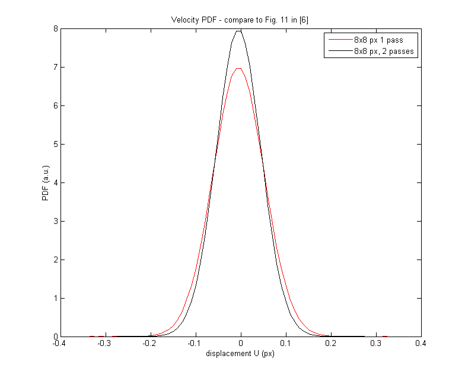

Example 08a - Treating test case A1 from 3rd PIV Challenge
This case is essentially the same as example 07: The test case A1 from 3rd PIV challenge [ref. 6] is treated. Mean and rms velocities are computed, velocity PDF is determined and wavenumber spectra is calculated; these results can be compared to results shown in reference [6], Figs. 3a, 16, 18 and Table 12.
Another shown feature is the possibility to add iterations during the processing. Initially, the data are processed in four passes (with IA size 64x64, 32x32, 16x16 and 8x8 pixels). Additional pass (with 8x8 pixels interrogation size) are then performed. Effect of number of passes on velocity PDF and spectra is shown.
Reference: [6] Stanislas, M., K. Okamoto, C. J. Kahler, J. Westerweel and F. Scarano, (2008): Main results of the third international PIV Challenge. Experiments in Fluids, vol. 45, pp. 27-71.
Instructions:
- Download images (case A2) from PIVchallenge site,
- Unzip them to folder ../Data/Test PIVChallenge3A1,
- Run this example.
Contents
Define image pairs to treat
Initialize the variable pivPar. Get list of image files.
% Initialize variables clear; pivPar = []; % variable for settings imagePath = ['..',filesep,'Data',filesep,'Test PIVChallenge3A1']; % folder with processed images try % get list of "A" images aux = dir([imagePath, filesep, '*a.tif']); for kk = 1:numel(aux), fileList{kk} = [imagePath, filesep, aux(kk).name]; end %#ok<SAGROW> im1 = sort(fileList); % get list of "B" images aux = dir([imagePath, filesep, '*b.tif']); for kk = 1:numel(aux), fileList{kk} = [imagePath, filesep, aux(kk).name]; end %#ok<SAGROW> im2 = sort(fileList); catch % if error on loading images, probably images were not downloaded. Give a message. error(['No images found. Please, download images (case A1) from http://www.pivchallenge.org/pub05/A/A1.zip, '... 'unzip them and place them to folder ../Data/Test PIVChallenge3A1.']); end
Running first 4 passesof PIV processing
First, image pairs will be treated with 3-pass PIV with decreasing size of interrogation area and spacing of interrogation grid. Set the corresponding parameters:
pivPar.iaSizeX = [64 32 16 8]; % interrogation area size for three passes pivPar.iaStepX = [32 16 8 4]; % grid spacing for three passes pivPar.anVelocityEst = 'none'; % iterate each image pair zero pivPar.anOnDrive = true; % files with results will be stored in an output folder pivPar.anForceProcessing = false; % if false, only image pairs, for which no file with results is % available, will be processed. Processing is skipped if file with results is available. If true, % processing is carried out even if result file is present. (Set this parameter to true if all image % pairs should be reprocessed, for example because of different setting of processing parameters). pivPar.anTargetPath = [imagePath,filesep,'pivOut1']; % folder for storing results of first three passes pivPar.qvPair = {'U','clipLo',-0.20,'clipHi',0.20,... 'invLoc'}; % plot locations of invalid velocity vectors figure(1); [pivPar1] = pivParams([],pivPar,'defaultsSeq'); % Run the analysis now [pivData1] = pivAnalyzeImageSequence(im1,im2,[],pivPar1);
Checking presence of 101 output files... Finished in 0.03 s. All required files found. Reading results from pivSeq_A1000_a_A1000_b_A1001_a_A1099_b.mat. This will take a while (in my Matlab, Ctrl+C does not work at this stage)... Finished in 2.84 s.
Running additional (5th) pass of PIV processing
Images will be processed with two additional passes, during which the interrogation area size is kept at 16x16 pixels and grid spacing at 8x8. Results will be stored in another variable, and files will be placed in different folder.
pivPar.iaSizeX = [ 8]; % interrogation area size for fourth and fifth pass pivPar.iaStepX = [ 4]; % grid spacing pivPar.anVelocityEst = 'pivData'; % use velocity data stored in pivData as velocity estimate used for image % deformation. By this setting, results of previous passes are transfered % to additional passses. pivPar.ccMethod = 'dcn'; % set cross-correlation method to direct convolution (faster than default % FFT, if displacements are small, which is the case of final passes) pivPar.anTargetPath = [imagePath,filesep,'pivOut2']; % set output folder different than that for first 16x16 px pivPar.qvPair = {'U','clipLo',-0.20,'clipHi',0.20}; figure(1); [pivPar2] = pivParams([],pivPar,'defaultsSeq'); % Run the analysis now. Note that pivData1 (results of first three passes) are an input variable. [pivData2] = pivAnalyzeImageSequence(im1,im2,pivData1,pivPar2);
Checking presence of 101 output files... Finished in 0.03 s. All required files found. Reading results from pivSeq_A1000_a_A1000_b_A1001_a_A1099_b.mat. This will take a while (in my Matlab, Ctrl+C does not work at this stage)... Finished in 2.69 s.
Show results
First, samples of the velocity field are shown
N1 = numel(pivData1.U); N2 = numel(pivData2.U); Nt = size(pivData2.U,3); % figure(1); for kk=1:10:Nt hold off; pivQuiver(pivData2,'timeSlice',kk,... 'U','clipLo',-0.2,'clipHi',0.2); title('Background: U_{mag}. Quiver: velocity (black: valid, white: replaced)'); end
Compute the mean and rms velocities, display then and compare them to the reference values.
% Statistics for the velocity fields after 4 passes: meanU1 = mean(reshape(pivData1.U,N1,1)); meanV1 = mean(reshape(pivData1.V,N1,1)); stdU1 = std(reshape(pivData1.U,N1,1)); stdV1 = std(reshape(pivData1.V,N1,1)); % Statistics for the velocity fields after 5th pass: meanU2 = mean(reshape(pivData2.U,N2,1)); meanV2 = mean(reshape(pivData2.V,N2,1)); stdU2 = std(reshape(pivData2.U,N2,1)); stdV2 = std(reshape(pivData2.V,N2,1)); % Print results: fprintf('\nStatistics (8x8 px, 1 pass): mean(U) = %+6.4f, mean(V) = %+6.4f, std(U) = %+6.4f, std(V) = %+6.4f\n',... meanU1,-meanV1,stdU1,stdV1); fprintf('Statistics (8x8 px, 2 passes): mean(U) = %+6.4f, mean(V) = %+6.4f, std(U) = %+6.4f, std(V) = %+6.4f\n',... meanU2,-meanV2,stdU2,stdV2); fprintf('Reference: mean(U) = %+6.4f, mean(V) = %+6.4f, std(U) = %+6.4f, std(V) = %+6.4f\n',... 0,0,0.0625,0.0626);
Statistics (8x8 px, 1 pass): mean(U) = -0.0000, mean(V) = -0.0000, std(U) = +0.0571, std(V) = +0.0571 Statistics (8x8 px, 2 passes): mean(U) = -0.0000, mean(V) = -0.0000, std(U) = +0.0503, std(V) = +0.0503 Reference: mean(U) = +0.0000, mean(V) = +0.0000, std(U) = +0.0625, std(V) = +0.0626
Compute histogram of u' and show it
% define bin range of histogram binranges = (-0.4:0.01:0.4)'; % compute and normalize histogram bincounts1 = histc(reshape(pivData1.U-meanU1,N1,1),binranges); bincounts1 = bincounts1/(sum(bincounts1)*(binranges(2)-binranges(1))); bincounts2 = histc(reshape(pivData2.U-meanU2,N2,1),binranges); bincounts2 = bincounts2/(sum(bincounts2)*(binranges(2)-binranges(1))); % display it figure(2); plot(binranges,bincounts1,'-r',binranges,bincounts2,'-k'); legend('8x8 px 1 pass','8x8 px, 2 passes'); xlabel('displacement U (px)'); ylabel('PDF (a.u.)'); title('Velocity PDF - compare to Fig. 11 in [6]');
Compute power spectra of u':
% Spectrum from the velocity field after 4 passes uprime1 = pivData1.U-meanU1; % velocity difference from the mean velocity uprime1 = uprime1(1:2:end,:,:); % reduce amount of velocity data uspectra1 = zeros(size(uprime1,1)*size(uprime1,3),size(uprime1,2)); % Compute spectrum for every row of velocity data for ky = 1:size(uprime1,1) for kt = 1:size(uprime1,3) uspectra1(kt+(ky-1)*size(uprime1,1),:) = abs(fft(uprime1(ky,:,kt))).^2; end end % compute mean spectrum uspectra1 = mean(uspectra1,1); uspectra1 = uspectra1(1:floor(numel(uspectra1)/2)); % Determane wavenumber corresponding to the spectra dk = 1/(pivData1.X(1,end,1)-pivData1.X(1,1,1)); k1 = (0:(numel(uspectra1)-1))*dk; % normalize spectrum uspectra1 = uspectra1/sum(uspectra1) * std(reshape(uprime1,numel(uprime1),1),1)^2/(2*pi*dk) ; % Spectrum from the velocity field after 5th pass uprime2 = pivData2.U-meanU2; uprime2 = uprime2(1:4:end,:,:); % reduce amount of velocity data uspectra2 = zeros(size(uprime2,1)*size(uprime2,3),size(uprime2,2)); for ky = 1:size(uprime2,1) for kt = 1:size(uprime2,3) uspectra2(kt+(ky-1)*size(uprime2,1),:) = abs(fft(uprime2(ky,:,kt))).^2; end end uspectra2 = mean(uspectra2,1); uspectra2 = uspectra2(1:floor(numel(uspectra2)/2)); % Determane wavenumber corresponding to the spectra dk = 1/(pivData2.X(1,end,1)-pivData2.X(1,1,1)); k2 = (0:(numel(uspectra2)-1))*dk; % normalize spectrum uspectra2 = uspectra2/sum(uspectra2) * std(reshape(uprime2,numel(uprime2),1),1)^2/(2*pi*dk) ; % Display the spectra figure(4); loglog(2*pi*k1,uspectra1,'-r',2*pi*k2,uspectra2,'-k'); legend('8x8 px 1 pass','8x8 px, 2 passes'); xlabel('k_x (1/px)'); ylabel('E (a.u.)'); xlim([5e-3,1]); ylim([1e-4,10]); title('Velocity spectra - compare to Figs. 3a and 8 in [6]');